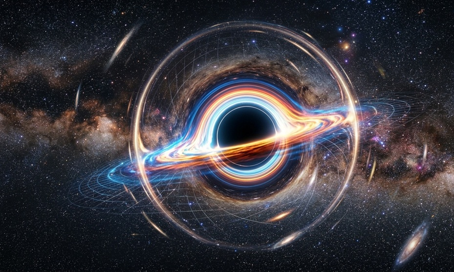

Have you ever looked at a black hole image and wondered, “Why does the light around it look bent into a ring?”
That strange glowing circle is called gravitational lensing around black holes, and it confuses many students because light is supposed to travel in a straight line.
The trick is simple: the black hole is not pulling light sideways like a magnet. Instead, its gravity bends space itself, and light simply follows that curved path.
Think of it like this: Imagine a trampoline bending under a heavy bowling ball.
Now roll a marble near the ball. The marble curves inward, not because someone pushed it sideways, but because the surface itself is bent.
That’s exactly how black holes bend the path of light.
The core idea comes from Einstein’s General Relativity.
Einstein said gravity is not just a force.
Massive objects actually curve space-time.
A black hole is so massive and compact that it bends space-time extremely strongly.
So when light from a distant star passes near the black hole, it follows the curved geometry of space.
That makes the light appear bent.
Light still travels in the straightest possible path locally, but because space itself is curved, the full path becomes curved.
This is why distant stars can appear:
Let’s make this even easier.
Imagine two familiar things:
A heavy ball bends the trampoline.
Anything rolling nearby curves.
This helps you imagine space-time curvature.
Now imagine looking through a curved glass bottle.
The objects behind it appear:
That’s similar to how a black hole acts like a cosmic lens.
So black holes are like: gravity-powered magnifying glasses in space
When the distant star, black hole, and Earth line up correctly, the bent light forms a ring.
This is called an Einstein Ring.
Perfect alignment→Einstein Ring\text{Perfect alignment} \rightarrow \text{Einstein Ring}Perfect alignment→Einstein Ring
Instead of seeing the star in one spot, you see its light wrapped around the black hole.
This is why black hole images often show a bright circular glow.
Very close to a black hole is a special region called the photon sphere.
Here gravity is so strong that light can actually orbit the black hole.
That means some light circles around once—or even multiple times—before escaping toward us.
This creates:
This is what makes black hole visuals look almost unreal.
This is where your Physics Fiction niche shines ✨
In Interstellar, the black hole Gargantua looks incredibly strange.
You can see:
This is real gravitational lensing.
The movie worked with physicist Kip Thorne, so the lensing visuals were based on real equations.
That’s why Gargantua became one of the most scientifically accurate black holes ever shown in film.
The top and bottom of the disk become visible because light bends over the black hole and reaches your eyes from unexpected directions.
That’s gravitational lensing in action.
This is not just movie science.
Astronomers use gravitational lensing to detect:
A black hole can bend and magnify light from objects behind it.
This helps scientists study galaxies that are otherwise too far away to see.
In simple words:
gravity becomes a natural telescope
This is one of the most powerful tools in modern astronomy.
Because the black hole bends space-time, and light follows that curved geometry.
It is when gravity bends light, making distant objects appear stretched, brighter, or ring-shaped.
Because it was based on real physics calculations by Kip Thorne.
It is a ring of light formed when a distant star, black hole, and observer align perfectly.
The easiest way to understand gravitational lensing around black holes is this:Space bends like a trampoline, and light behaves like a marble rolling across it.
Once you picture that, the glowing rings around black holes suddenly make sense.
This is why black holes don’t just trap light—they can also reshape the entire sky behind them.
And that’s what makes this one of the most beautiful ideas in physics.